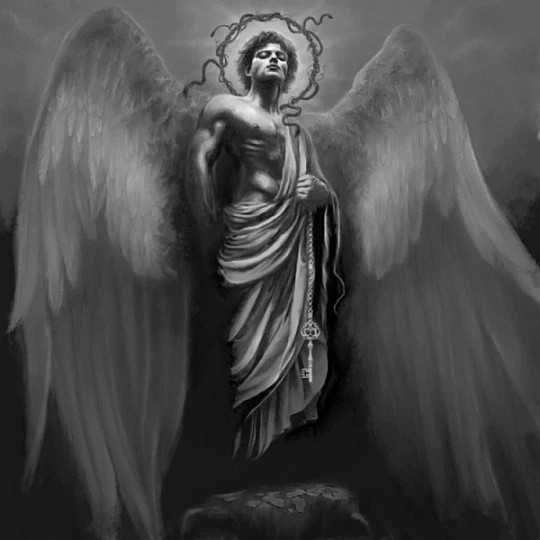
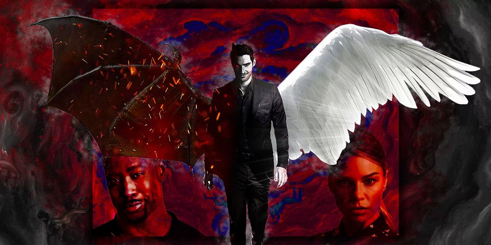

|
 |
La figura de Lucifer trasciende la religión y se convierte en un símbolo profundamente filosófico.
Representa el conflicto eterno entre la obediencia y la libertad, entre la luz y la oscuridad. Su historia no solo habla de castigo, sino también de elección. Elegir cuestionar, elegir desafiar, elegir pensar por sí mismo. |
|
 |
Desde esta perspectiva, Lucifer puede interpretarse como un reflejo del ser humano:
un ser que busca conocimiento, pero que también enfrenta las consecuencias de sus decisiones. En última instancia, su historia nos deja una pregunta inquietante: ¿es peor vivir en la oscuridad de la ignorancia o arriesgarse a caer por alcanzar la verdad? Tal vez, Lucifer no sea solo el símbolo del mal… sino también el símbolo de la libertad. |
Este sitio es con fines educativos. Las imágenes utilizadas pertenecen a sus respectivos autores. No se reclama propiedad sobre ellas.